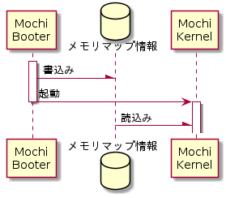

物理メモリ管理 - 目次
概要
物理メモリ領域を仮想メモリの管理単位である4KB単位で管理する。
管理のために、MochiKernelを起動するブートローダはメモリマップ情報をMochiKernelに渡す必要がある。

メモリマップ情報入力シーケンス
メモリマップ情報入力シーケンス
メモリマップ情報入力
MochiKernelは、下記物理アドレスからメモリマップ情報を取得する。
メモリマップ情報格納先
| 物理メモリアドレス |
| 0x0000_0CD8 |
メモリマップ情報は、メモリ領域のアドレス、サイズ、タイプ情報を持った1つ以上のエントリから構成される。メモリアドレスとサイズは4KBでアライメントされ、各エントリはメモリアドレスでソートされている必要がある。また、4GB全てのメモリ領域情報が格納されている必要がある。メモリマップ情報のエントリ構造を以下に示す。
メモリマップ情報エントリ構造
| オフセット [byte] |
サイズ [byte] |
フィールド名 | 値 | 説明 |
| 0 | 4 | *pAddr | 0x0000_0000～ 0xFFFF_FFFF |
メモリ領域先頭アドレス |
| 4 | 4 | size | 0x0000_0000～ 0xFFFF_FFFF |
メモリ領域サイズ |
| 8 | 4 | type | 0x01 | 使用可能メモリ領域 |
| 0x02 | 使用不可メモリ領域 | |||
| 0x05 | ブートデータ領域 | |||
| 0x06 | カーネル領域 | |||
| 0x07 | プロセスイメージ領域 |
[設計メモ]
BIOSから取得したE820メモリマップ情報でなく独自のメモリマップ情報を必要とした理由
- E820メモリマップ情報は64bit先頭アドレスと終端アドレスとメモリ領域タイプから成る。現状のMochiKernelは32bitモードで動作するので、64bitのメモリ空間管理は不要である事と、終端アドレスではなくメモリ領域サイズの方が必要な情報であったため。
- E820メモリマップ情報はアドレスによるソートが(仕様的には)行われていないため。
- E820メモリマップ情報は各エントリのアドレスアライメントが4KB単位でないため。
- E820メモリマップ情報は未定義のメモリ領域があるため。
- MochiKernelは32bitモードで実行するので16bitで動作するBIOSコールを使用することが出来ないため。